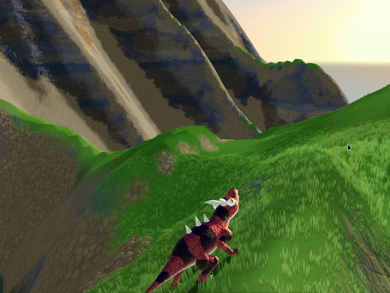
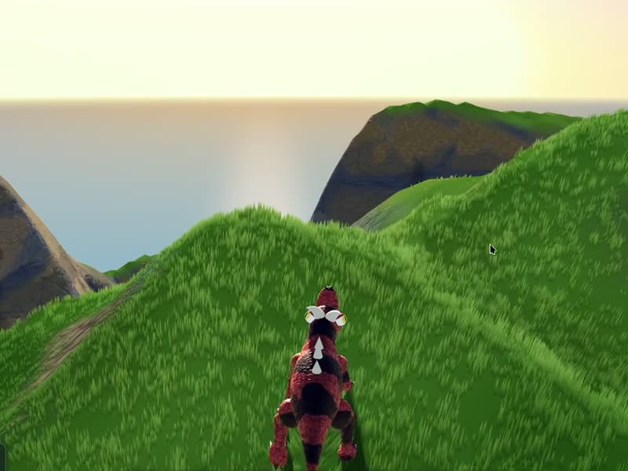

in progressdesktop · godot + ccreature stage
Primigenia
Start in a tide pool. Walk out of the sea. Reach the stars. Whatever you became on the way comes with you.
the idea
A game I wanted to play, so I'm building it.
The video up there is 30 seconds of the first valley. A red, spiny thing out of the creature studio, running over ridges at dawn. Three and a half months of work to get here, and it is starting to feel like a place.
The promise of evolution games has always been the same: take one creature from a tide pool to the galaxy. What usually happens is five good mini-games glued together. Each stage hands the next a single badge and then forgets about you. The fish you were doesn't matter once you have a spaceship.
Primigenia is built around the opposite rule: what you became early still matters among the stars. If your lineage went back to the water, ocean worlds and ice moons are already home and you never terraform them. If you found the secret that seals your skin against the cold and the radiation on the high peaks, your ships don't need a pressure hull. Spin silk as a creature and your civilisation gets to the space elevator early, like the spiders in Children of Time.
Underneath, the whole thing runs on a deterministic C simulation: same seed, same inputs, same world, bit for bit. That's what lets it be two things at once: a game you play with your hands, and an environment where language models and RL agents play the exact same game through text and numbers.
“The fish you were should still matter when you build your first starship.”the one rule every other decision answers to




the arc
Six stages, one lineage.
the lineage ledger
Pick something you became. Follow it to the stars.
Every place you can live, from a biome to a moon to the hull of a ship, has an environment: medium, pressure, temperature, atmosphere, gravity, radiation, light, food. Your species has a tolerance for each. The gap between the two is what it costs you to live there. One mechanism, written once in C, and it grows with every stage.
nothing is arbitrary
Every trait has a why, and the why is the move.
I don't want creatures that are a random pile of horns. Every trait in the world is the end of a causal chain that starts at the star. Shared pressures give you convergent solutions or opposite ones, and the same rules make other planets grow different life once you get to space.
In play, you observe a species, quietly and up close, and the journal fills in the chain one link at a time. Understand the whole why, and you learn its move.
- Starlight, age, flares
- Planetgravity, day, air, oceans
- Habitatcliff, reef, cave, steppe
- Pressurewhat kills you here
- Traitwhat survived it
- Your movea skill, or a weakness to use
it's also a benchmark
How fast can an agent win the whole arc?
Same thing that drove me with mus: I'd rather watch models do something long, messy and strategic than answer another multiple-choice test. Winning six genres in a row, with choices that pay off three stages later, is a hard planning problem. The C core has two faces on top of one simulation, and humans, LLMs and RL policies all play the same world.
you
Godot, keyboard, mouse
The desktop build is the game proper: the island, the creature studio, procedural animation from your creature's actual body. Leg count, length and mass decide how it walks; nothing is canned.
an agent
JSON in, verbs out
Language models get a structured observation and answer with id-targeted verbs. RL gets float vectors from the same state.
// what the model sees (trimmed) { "near": [{ "id": 12, "type": "grazer", "bearing": -34, "dist": 18.5 }], "progress": 0.41, "dna": 220, "traits": ["aquatic"] } // what it can say approach #12 sing #12 bite #12 explore 270 edit {genome} advance
where it actually is
Honest status, November 2026.
works today
- The island: eroded terrain, carved rivers, cliffs, clouds and their shadows, dawn fog.
- The creature studio: sculpt the spine, place parts, paint, and it walks the way it's built.
- Combat in the C core, with tells you can read and dodge.
- The social side: befriend, observe, intimidate, eat. Herds remember what you did.
- Python bindings, Gymnasium envs and a text face for LLMs.
not yet
- Water, flying and digging. The creature is still stuck on dry land.
- Parts discovery, nest editing, the journal, most of the secrets.
- Everything after the creature stage. My rule: finish one stage completely, then build on top.
- A download. When there is one it will be desktop builds, not the browser.
If you ever wanted the fish you were to matter when you reach the stars, this is for you.